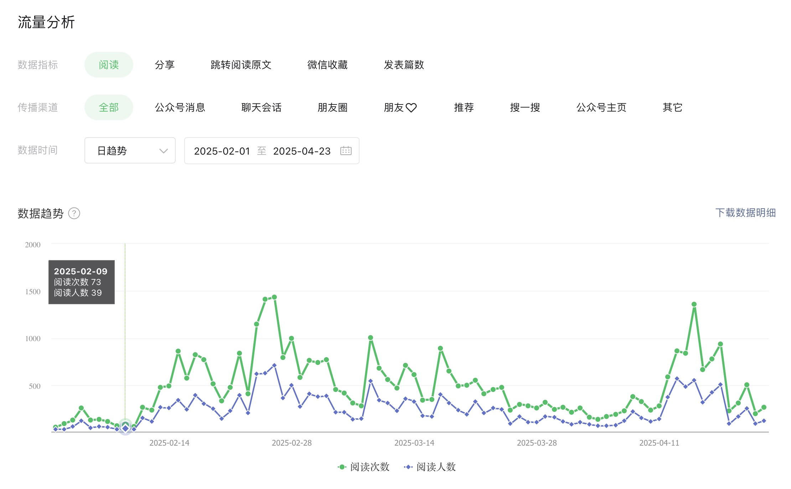
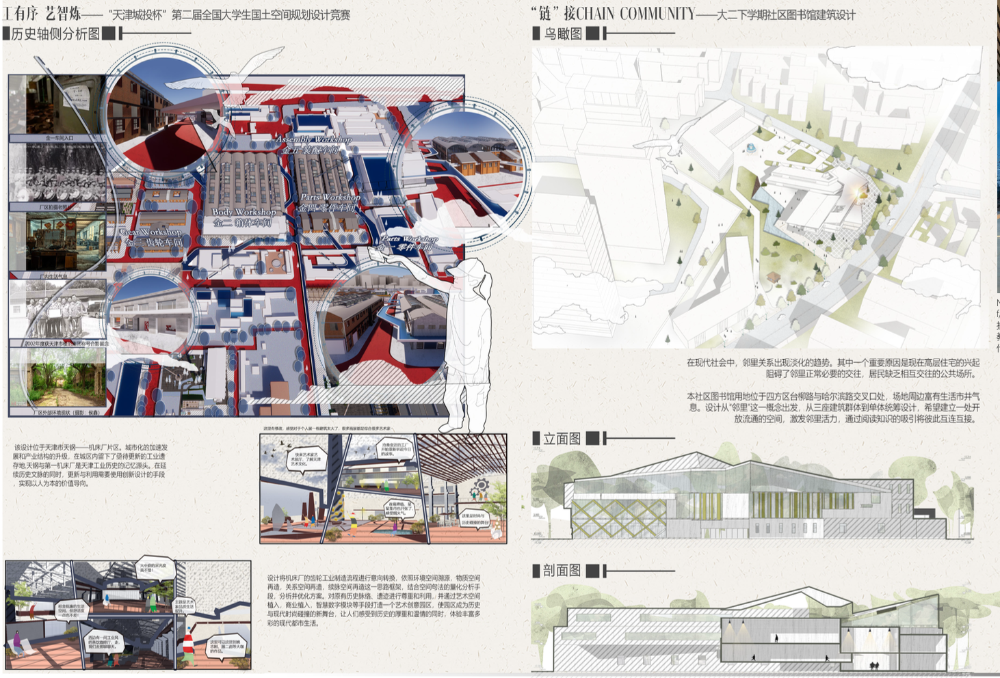
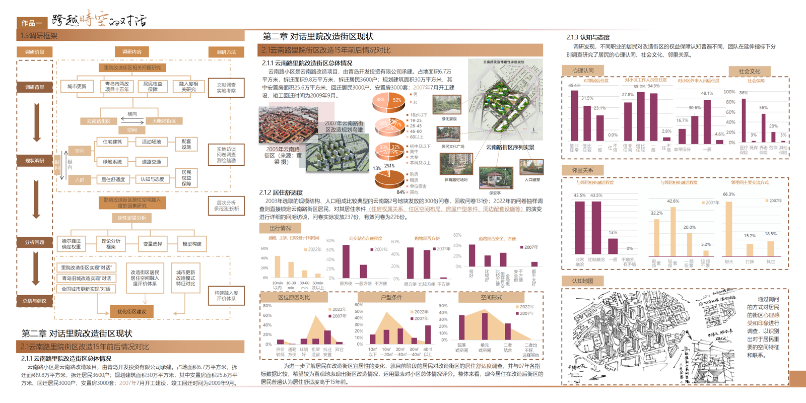
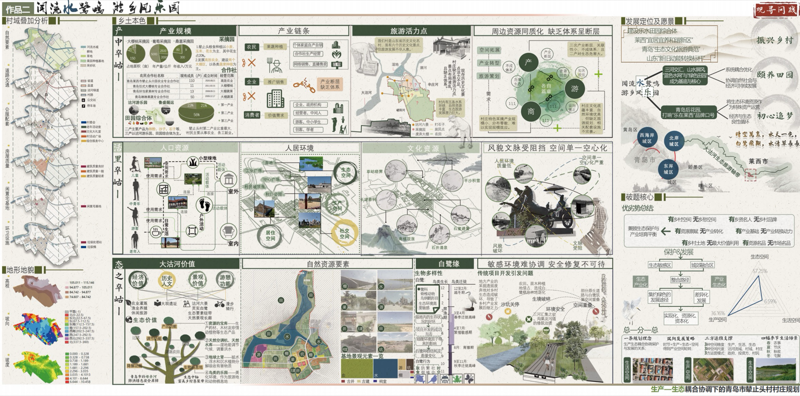
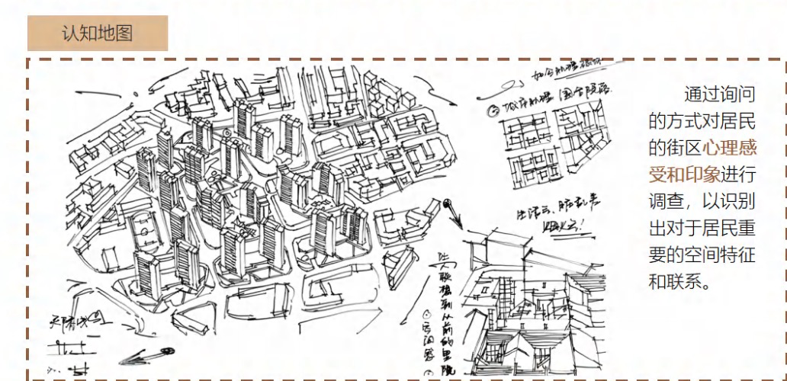
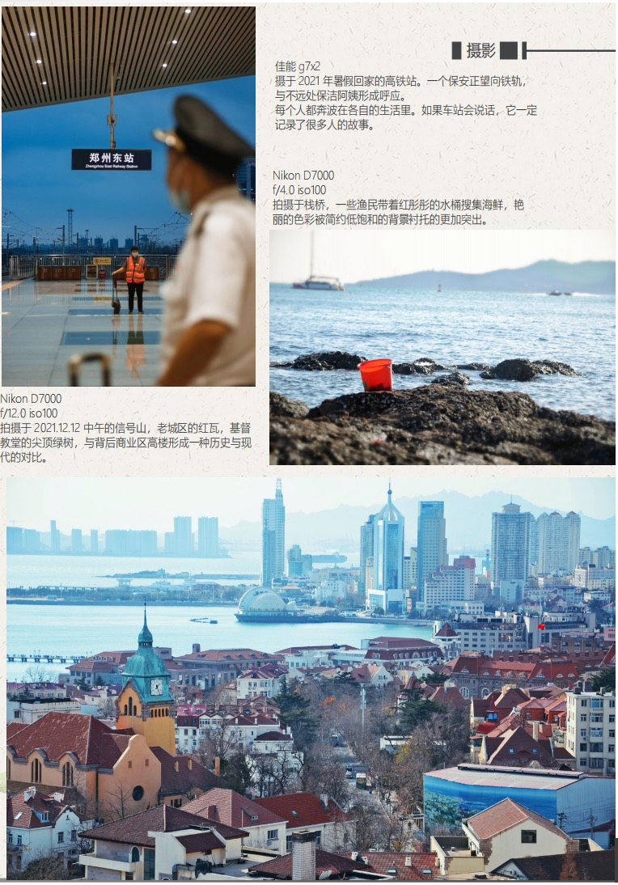

CREATOR ARCHIVE
·
06 / 08
作为创作者，我也是AI产品的真实用户。
EXHIBIT TYPE
DATA GROWTH
PLATFORMS · 03
MEDIA · CHART

EXHIBIT TYPE
AI VIDEO
PIPELINE · FULL
MEDIA · VIDEO
EXHIBIT TYPE
ART & DESIGN
STATUS · 入围
MEDIA · IMAGES

EXHIBIT TYPE
FIELD REPORT
COVERAGE · 7 VILLAGES
MEDIA · IMAGES

EXHIBIT TYPE
STRATEGY
LAYERS · 04
MEDIA · IMAGES

EXHIBIT TYPE
FIELD SKETCH
METHOD · INTERVIEW
MEDIA · IMAGES

EXHIBIT TYPE
PHOTOGRAPHY
SETS · 04
MEDIA · IMAGES
